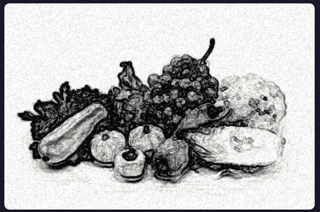
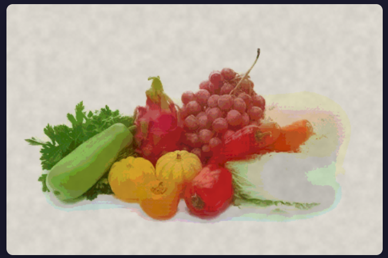
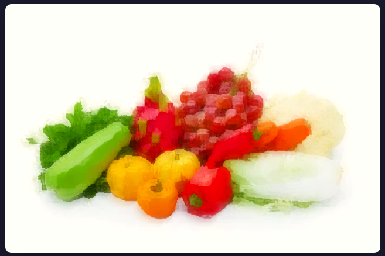
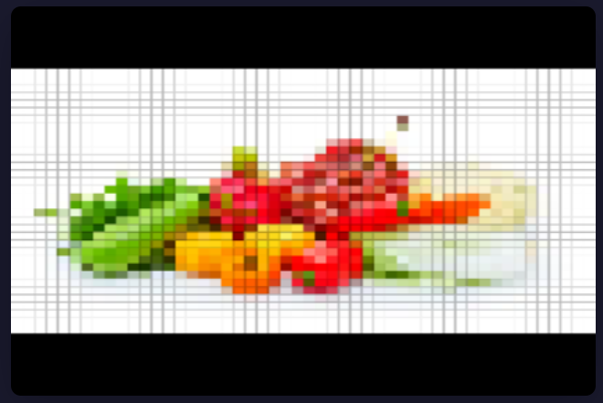

Link to webpage: https://innoka-uka.github.io/cs184-sp26-hw-webpages-hw-webpage/final/index.html
My system is built as a client-side web application using WebGL 2.0 for GPU-accelerated image processing. The architecture consists of three main components: a WebGL renderer that manages texture loading and shader programs, a collection of GLSL fragment shaders implementing the artistic effects, and a JavaScript controller handling user interface and parameter updates.
The rendering pipeline follows a standard single-pass approach: the input image is loaded as a 2D texture, processed through the selected shader program, and rendered to a full-screen canvas. This design ensures minimal latency between parameter changes and visual feedback, enabling the real-time interactive experience.
The pencil sketch effect simulates hand-drawn pencil strokes through three key steps: edge detection, luminance mapping, and texture synthesis.
I implement the Sobel operator as a discrete convolution, computing image gradients in X and Y directions using the following kernel matrices:
The gradient magnitude is computed as G = sqrt(Gx² + Gy²), which I use to identify pencil stroke locations.
Following edge detection, I convert the original image to grayscale using luminance-weighted averaging: Y = 0.299R + 0.587G + 0.114B (perceptual luminance formula from the color lecture). The final sketch combines edge intensity with luminance-based stroke density and adds pseudo-random noise to simulate paper texture.
The watercolor effect requires both smooth color transitions and preserved edges—a challenging balance achieved through bilateral filtering.
Unlike Gaussian blur, the bilateral filter considers both spatial distance and color similarity when computing weights:
Where Gs is the spatial Gaussian and Gr is the range (color) Gaussian. This formulation preserves edges while smoothing flat color regions.
After bilateral filtering, I apply color quantization to reduce the number of distinct colors, simulating watercolor pigment boundaries. Additionally, I generate paper texture using Fractal Brownian Motion (FBM) noise and simulate color bleeding at soft transitions.
The oil painting effect uses the Kuwahara filter, which produces painterly results by selecting the most uniform color region within a neighborhood.
The filter divides the neighborhood into four overlapping quadrants and computes the mean color and variance for each. The output color is the mean of the quadrant with the smallest variance:
This approach preserves structure while creating the characteristic "patchy" appearance of brush strokes.
I enhance the effect with directional blur computed from local gradients, which aligns the brush strokes with image features. I also implement HSV color space transformation for saturation boost, converting RGB→HSV, modifying saturation, and converting back to RGB.
All shaders are written in GLSL ES 3.0 and run entirely on the GPU. The JavaScript codebase (~600 lines total) includes:
webgl-utils.js: WebGL context management, shader compilation, texture handling (180 lines)filters.js: Three fragment shader implementations (392 lines)main.js: Application logic, UI controls, image loading (275 lines)I use standard Web APIs exclusively—no external libraries—so the implementation directly applies course concepts including convolution, sampling theory, and color models.
Problem: High-quality bilateral and Kuwahara filters require large convolution kernels, which are computationally expensive.
Solution: I implemented an adaptive kernel size that scales with the smoothStrength and brushSize parameters, capping the maximum to maintain real-time performance. For the bilateral filter, I limited the range to a fixed sigma (0.3) while keeping spatial sigma configurable.
Problem: My initial implementation used dynamic array indexing in GLSL, which is not supported in WebGL 1.0.
Solution: I rewrote the Kuwahara filter using explicit quadrant calculations instead of loops with array indices, ensuring compatibility with WebGL 1.0 and 2.0.
Problem: Edge artifacts appeared near image boundaries due to texture sampling outside valid ranges.
Solution: I set GL_CLAMP_TO_EDGE for texture wrapping and added boundary checks in shader computations where necessary.
Implementing core algorithms (Sobel, bilateral filter, Kuwahara) from scratch deepened my understanding of the mathematical foundations. Translating equations to shader code required careful attention to data types, precision, and GPU-specific considerations.
Unlike CPU code, GPU shaders operate on pixels independently, preventing iterative algorithms that depend on previous results. I learned to reformulate problems (e.g., bilateral filtering) into single-pass or feed-forward approaches.
Building an interactive demo revealed the importance of parameter sensitivity. Some parameters (e.g., edge strength) produce dramatic changes with small adjustments, while others (e.g., paper texture) require fine-grained control. This experience will inform my future UI design decisions.
This project connected computer graphics concepts (filtering, convolution) with digital image processing and human perception (NPR rendering, watercolor aesthetics). The interdisciplinary nature of graphics makes it applicable far beyond traditional rendering applications.
My final system successfully renders three artistic styles in real-time. Below are sample outputs demonstrating each filter's capabilities:

Pencil Sketch
Edge strength: 1.5, Contrast: 1.2

Watercolor
Smooth: 5.0, Quantize: 8 levels

Oil Painting
Brush: 5, Saturation: 1.2

Mosaic
Mosaic style
The system achieves 30+ FPS on modern browsers for images up to 1920×1080 resolution. Parameter adjustments respond instantly, enabling exploratory creative work.
The complete application is available at artistic-filter/index.html. Users can upload any image, select from the three filters, and adjust parameters using sliders. The interface provides immediate visual feedback.
Watch the demonstration video: Click here to view the demo video
As a single-member team, I was responsible for all aspects of this project from conceptual design to implementation and documentation.
I initiated this project by researching Non-Photorealistic Rendering (NPR) techniques and their real-time implementation requirements. I designed the system architecture to achieve interactive performance using WebGL shaders.
I implemented all three artistic filters from scratch in GLSL ES 3.0:
I built the complete web interface including:
webgl-utils.js)filters.js)main.js)I independently identified and resolved several technical challenges:
I prepared the project proposal and this technical report, including mathematical formulations, algorithm descriptions, and performance analysis.